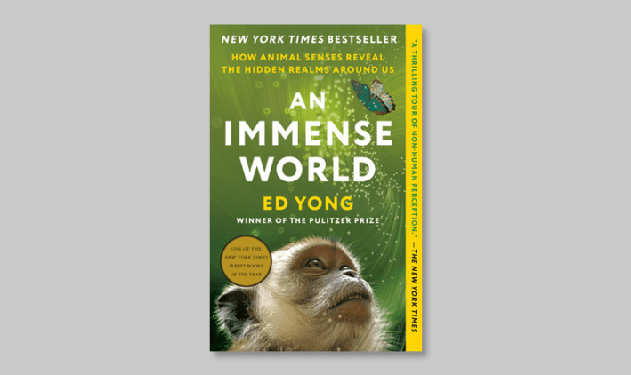
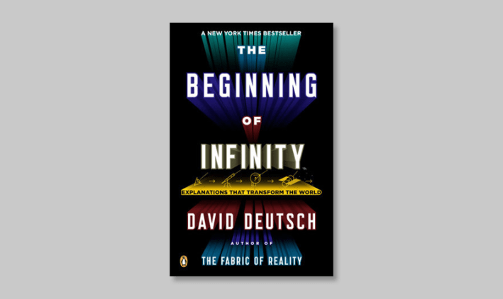
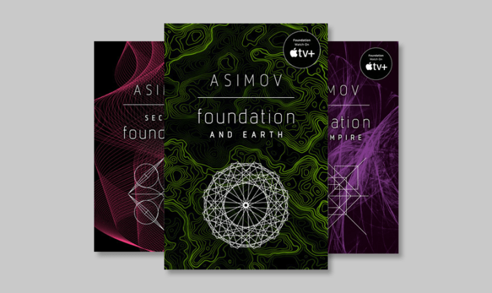
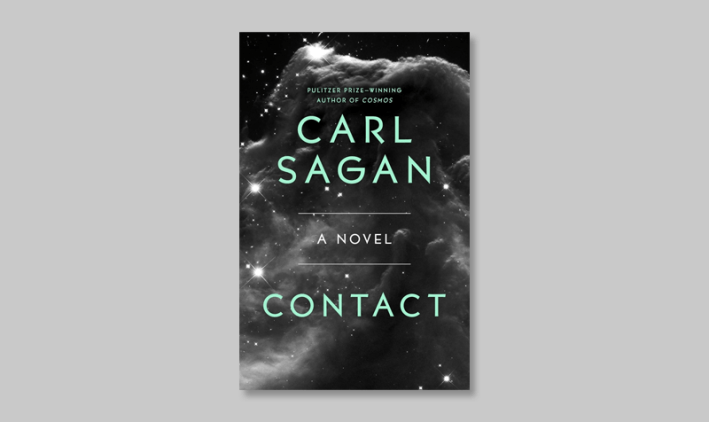
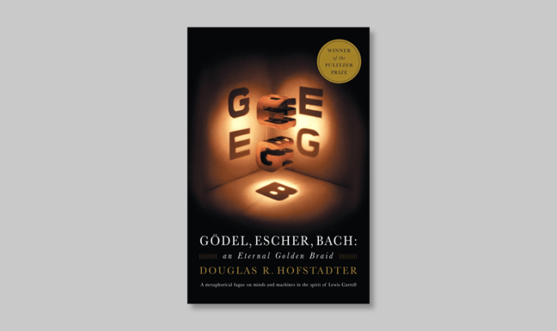
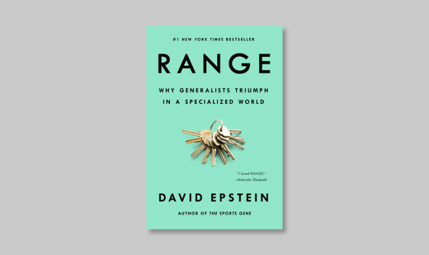
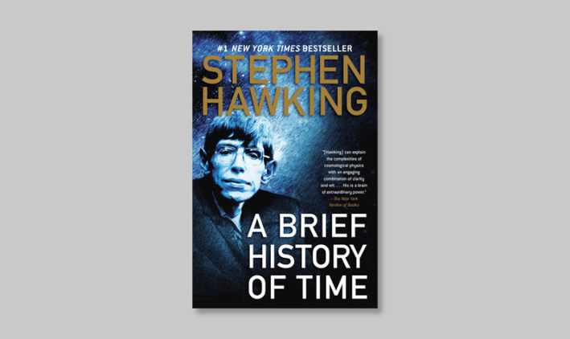

Today’s scientists are swamped in academic reading. With a seemingly endless stock of new papers published each day in niche journals and archives, researchers are pressured to pass their time studying within their own disciplinary boundaries. A geneticist could spend her career reading about the nature of a single gene found on a lone chromosome. And yet it’s time spent reading beyond their corners of expertise that often leaves the deepest impact on scientists.
That’s what we learned when we asked a dozen leading researchers to tell us about the books that have had a profound influence on them. Their answers range from sweeping historical novels to classic works of science fiction to philosophical meditations on the rules of reality. Like the scientists, the books come from a variety of perspectives and cultures. They combine ideas from different domains, inspire new ways of seeing reality, and, the scientists told us, often stir up fresh solutions to their own work.
Below we introduce you to the scientists, offer brief summaries of the books, and give the stage to the scientists to tell you about the works of literature that keep them inspired. After you’ve met the scientists and read about their choices, tell us, in the Comments section below or by emailing newsletters@nautil.us, about the book that’s had the biggest influence on your life. We’ll print a selection of your answers in our upcoming email newsletter.
Heather Berlin, Neuroscientist
Heather Berlin is a neuroscientist and clinical psychologist at Mount Sinai’s Icahn School of Medicine in New York. When not hosting Science of Perception Box, a popular podcast, she researches and writes about the neural basis of phenomena such as time perception, creativity, and psychiatric disorders like obsessive-compulsive disorder.
The Picture of Dorian Gray by Oscar Wilde

Penguin Classics
In this uproar-causing 19th-century novel, a young man remains outwardly youthful while a hidden portrait ages and records the moral consequences of his selfish actions. Wilde probes ideas about hedonism, responsibility, and the dangers of treating life as a work of art.
“I first encountered Dorian Gray while studying abroad in London, reading it on trains as I wandered through the U.K. Wilde’s story landed for me as a gothic thought experiment: what if the truth of our choices were perfectly recorded, just not where anyone could see it? As a scientist, I’m trained to trust evidence—even when it’s inconvenient—and Dorian made me ask what kinds of evidence we ignore when we’re trying to look polished, confident, or ‘right.’ Years later, when I arrived as a graduate student at Magdalen College, Oxford, where Wilde had also been a student, the book felt less like a Victorian scandal and more like a modern warning. In an era of curated identities and quantified achievement, Wilde’s fable still does what the best science does: It forces you to look at the data you’d sometimes rather not see.”
Robert Waldinger, Psychiatrist
Robert Waldinger is a psychiatrist who currently directs the Harvard Study of Adult Development, the longest longitudinal study of its kind. Through this study, Waldinger oversees the collection and analysis of biographical data from 700 Boston-area men and their families, an effort that first began at Harvard in the early 1940s.
Wherever You Go, There You Areby Jon Kabat-Zinn
Balance
With short reflections and guided practices, this how-to book from Kabat-Zinn explores how mindfulness and meditation can transform ordinary experiences into opportunities for insight and calm, inviting readers to simply be where they are at any given moment.
“I read this book when I was in my early 30s, and it completely turned my head around with its very simple explanations of Buddhist philosophy. The truth of impermanence, the myth of a separate and isolated and fixed self, and the interconnection of everyone and everything helped me make sense of the world and my life in a completely new way. I eventually found my way to practicing Zen, received rigorous Zen training over 20 years, and am now a Zen teacher, Roshi. The book literally changed my life.”
Sheri Wells-Jensen, Linguist / Astrobiologist
Sheri Wells-Jensen is a professor of linguistics at Bowling Green State University, where she studies issues including phonetics, braille, language creation, and language acquisition as they relate to the possible structure of extraterrestrial languages. As a blind person, Wells-Jensen writes on issues that arise from the mismatches and limitations of human communication.
An Immense World: How Animal Senses Reveal the Hidden Realms Around Usby Ed Yong

Penguin Random House
Pulitzer Prize-winning science journalist Yong explores how animals perceive the world through senses that differ from those of human beings. By revealing the hidden experiences of animals, the book invites readers to imagine realities beyond their own recognition, and to see life on Earth with renewed humility and awe.
“It’s not just that this book contains something utterly fascinating on almost every page, it’s that Mr. Yong is clearly unapologetically gobsmacked by the beauty of the natural world without sacrificing the keen scientific approach. The writing is fleet and witty, the research is deep and he really does manage to dip our reluctant toes into other perceptual realms. The goal is not to try hard to understand other beings by adding or subtracting sense impressions from our own experience of the world, but to radically respect the complexity and completeness of the way other beings live. Please, can we have Mr. Yong on the team that meets the first aliens.”
Luis Bettencourt, Physicist / Urban Researcher
Luis Bettencourt is a professor of ecology and evolution at the University of Chicago. Trained initially as a physicist, Bettencourt’s research has applied mathematical models to topics as varied as the structure of large cities, the growth of slums, and the spread of disease across human networks.
The Beginning of Infinityby David Deutsch

Penguin Random House
Taking readers on a journey through fundamental fields of science and then some, this book makes the case that humanity is entering an era of potentially unbounded technological and intellectual achievement. Deutsch, an English physicist, reframes progress as an open-ended process driven by reason rather than tradition, and asserts that human knowledge may soon be the most powerful force in the universe.
“In my life and work, I try to avoid the boxes created by traditional disciplines: I find them accidental, and often limiting and boring. I look for ways to reconcile physics and the natural sciences with humanism and creativity, not as separate phenomena, but how they play off each other and make sense together. In this sense I love David Deutsch’s The Beginning of Infinity. It is a theory of everything of sorts, but it is not the usual story from physics. It inverts the usual narrative by placing biological evolution and (human) creativity on par with physical processes and computation. It elevates learning and creativity to a fundamental natural process, blowing up evolution and humanism to cosmic proportions.”
Jill Tarter, Astronomer
Jill Tarter is an astronomer, the Chair Emeritus of the SETI Institute, and a longtime leader of NASA-funded SETI programs, through which she guided efforts to search the night sky for signs of advanced alien life. Her work as an ET-hunter served as the basis for the character Ellie Arroway in Carl Sagan’s novel Contact and the 1997 sci-fi film adapted from it.
Foundationby Isaac Asimov

Penguin Random House
Set against the slow decay of a galactic empire, this collection of novels chronicles a multi-century effort to preserve human knowledge through a scientific discipline called “psychohistory.” As generations pass, a small group of thinkers work to shorten a galactic dark age by anticipating the large-scale patterns of human history.
“Can I have three books? Asimov’s trilogy: Foundation, Foundation and Empire, and Second Foundation. Growing up, I read a lot of science fiction. I really liked losing myself in their worlds. Asimov was one of my favorites. I enjoyed his exploration of human-machine interactions and the constraints the laws of physics place on governing people at a distance—a very long distance!”
Anil Seth, Neuroscientist
Anil Seth is a professor of neuroscience at the University of Sussex whose research focuses on the origins of consciousness. His work has advanced the idea that consciousness is a controlled hallucination of reality produced by the biology of our brains.
A Suitable Boyby Vikram Seth
Harper Perennial Modern Classics
This 1993 novel follows a young woman’s search for love and marriage amid the political, religious, and social tensions of 1950s India. What begins as a quest to find an acceptable husband becomes a sweeping meditation on tradition, modernity, and cultural belonging when the novel’s protagonist is torn between three dramatically different suitors.
“I have no relation to Vikram Seth (as far as I know). But this book is an epic family narrative, set in post-independence India. I read it over three weeks when I was 19 years old and I have never forgotten it. It’s a grand testament to the power that literature has to create entire worlds. Since I read it, I’ve spent decades researching the brain basis of consciousness. All this time, A Suitable Boy has been in my mind as a reminder that fiction can sometimes tell us more than even the fanciest brain imaging, about what it's like to be a human being.”
Kimberly Arcand, Astronomer / Computer Scientist
Kimberly Arcand is the lead data visualizer at NASA’s Chandra X-Ray Observatory, among the most advanced space telescopes ever built. As Chandra’s communication head, Arcand works to translate the data collected by the telescope into visual and sonic renderings for members of the public.
Contact by Carl Sagan

Gallery Books
Sagan’s only work of fiction follows a scientist who detects an extraterrestrial signal that challenges humanity’s perceived place in the cosmos. The novel uses a potential first contact with an alien civilization to blend hard science with philosophical questions about faith, skepticism, and the very idea of objective truth.
“I was the first in my family to go to college and didn’t grow up around scientists, but reading about Ellie Arroway [see Jill Tarter, above] blew my mind. Seeing these brilliant, curious people navigate science, ethics, and human experience made me realize this path was possible. I wasn’t studying astronomy, but a few years later I found myself in the field, chasing the same curiosity and awe that Contact first sparked. The book showed me that science could be imaginative, creative, and inspiring—a lesson I still carry with me today.”
Harvey Whitehouse, Anthropologist
Harvey Whitehouse is a professor of anthropology and the former head of the School of Anthropology at the University of Oxford. Among the first researchers to study the cognitive science of religious belief, Whitehouse has spent much of his career observing the peoples of Papua New Guinea, and has developed theories to explain the commonalities between human religions across time and culture.
Stone Age Economics by Marshall Sahlins
Routledge
This text by Marshall Sahlins, an American anthropologist, rethinks economics by examining how early human societies organized their working lives. Drawing on anthropological evidence, the book argues that many hunter-gatherers became “affluent” by meeting their needs with relatively little labor and maintained ample free time to pursue endeavors like art and storytelling.
“This classic work inspired me to go to live with an Indigenous community in the rainforest of Papua New Guinea in hopes of understanding better how systems of production, consumption, and exchange shape the kinds of societies we live in. Although many questions remained when I got back home, the ideas in Sahlins’ book helped set me on a course to find answers that have continued to haunt me through life and have helped me to understand better why capitalism is neither natural nor inevitable.”
Dianne Newman, Microbiologist
Dianne Newman is a molecular microbiologist at the California Institute of Technology. A recipient of a MacArthur “Genius” Fellowship, her research investigates how nature’s smallest organisms can survive and create energy in hostile environments deprived of oxygen, like those of primordial Earth.
A Feeling for the Organism by Evelyn Fox Keller
Macmillan Publishers
This biography of Nobel Prize-winning scientist Barbara McClintock, a pioneering cytogeneticist who discovered the process of DNA transposition by studying corn specimens, highlights how one scientist’s unconventional methods and empathetic approach to research challenged standard ideas about objectivity and knowledge.
“I first read this biography of Barbara McClintock in my final year of graduate school and recently re-read it. As I age, I find different books interesting for different reasons, and books that impacted me much earlier in my life don’t always resonate with me as much today. However, here’s one that still resonates. I find it as inspiring now as I did then: It is a beautifully told tale of an extraordinary scientist who dared to be different.”
David Hanson, Roboticist
David Hanson is a roboticist and the founder of Hanson Robotics, where he develops advanced humanoid machines for research and public engagement, including the prototypical robot Sophia. A former Disney Imagineer, Hanson has led efforts to create new artificial skin materials, develop facial expression mechanisms for robots, and personify artificial intelligence via human-like interfaces.
Gödel, Escher, Bach: An Eternal Golden Braid by Douglas Hofstadter

Basic Books
In this now classic work, computer scientist Douglas Hofstadter finds connections between mathematician Kurt Gödel’s incompleteness theorems, artist M.C. Escher’s visual paradoxes, and composer Johann Sebastian Bach’s musical compositions, exploring how even the most complex systems are built from simple recurring rules.
“This nuanced, complex, wild ride of a book hit me at a formative moment. I was already fascinated by mysteries of natural history, the arts, physics, and the future of humanity and life, and this book brought them together in a way that was electrifying. As a teenager, the book catalyzed a series of satori-like realizations—that technologies of accelerating intelligence, including AI and human cognitive enhancement, would be the most important factor in humanity surviving the existential perils of our increasingly chaotic times. Hofstadter showed that Gödel’s incompleteness, Escher’s impossible geometries, and Bach’s fugal counterpoint are all expressions of the same deep pattern—one that applies equally to neurons and to silicon, to biological evolution and to the acceleration of machine intelligence. The book’s dialogues between Achilles and the Tortoise, inspired by Zeno of Elea and his paradoxes of infinity and motion, became so central to my thinking that I named our pioneering child-like robot Zeno, and later gave my son the same name—a living dedication to that endless pursuit.”
Morgan Levine, Computation Biologist
Morgan Levine is a former professor of pathology at the Yale School of Medicine and now serves as VP of Computation at the biotech company Altos Labs. She steers the startup in its efforts to understand, treat, and potentially reverse the molecular-level causes of aging and age-related disease.
Range: Why Generalists Triumph in a Specialized World by David Epstein

Penguin Random House
Journalist Epstein makes a case against the 10,000-hour rule in this 2019 work of nonfiction. Using examples of star athletes like tennis player Roger Federer and artists like Vincent van Gogh, Epstein argues that early experimentation across a diverse set of disciplines can equip people with the tools to solve today’s thorniest problems and reach success in an increasingly specialized modern world.
“Epstein’s central argument is that in complex, unpredictable domains, people who explore widely, borrow ideas across fields, and integrate diverse perspectives often outperform narrow specialists. This book gave empirical grounding to the instinctive way I had always wanted to approach my science, and it continues to shape my current work on building artificial intelligence for biology, where synthesis across modalities, domains, and fields is essential.”
John Mulchaey, Astronomer
Mulchaey is an astronomer and the current president of the Carnegie Institute for Science, through which he oversees the Carnegie Astronomical Observatories, including the high-altitude Las Campanas Observatory in Chile. When not directing Carnegie Science’s roughly 200 full-time researchers, Mulchaey studies the formation of massive galaxy clusters like the one in which our own Milky Way resides.
A Brief History of Timeby Stephen Hawking

Penguin Random House
In what is perhaps his most famous and enduring work of nonfiction, Hawking explains modern cosmology for a general audience. By tracing ideas from Einstein to quantum mechanics, Hawking frames complex concepts about time, black holes, and the heat death of the universe as part of humanity’s larger search for meaning.
“This book introduced me to modern cosmology and the study of the origin, evolution, and fate of the universe. These are topics we are still actively pursuing today and some of my favorite topics for my talks to the general public. Prior to reading this book, I had been an avid amateur astronomer. But this book helped me see the possibilities of a true professional career in astrophysics.” 
Lead image: fran_kie / Shutterstock